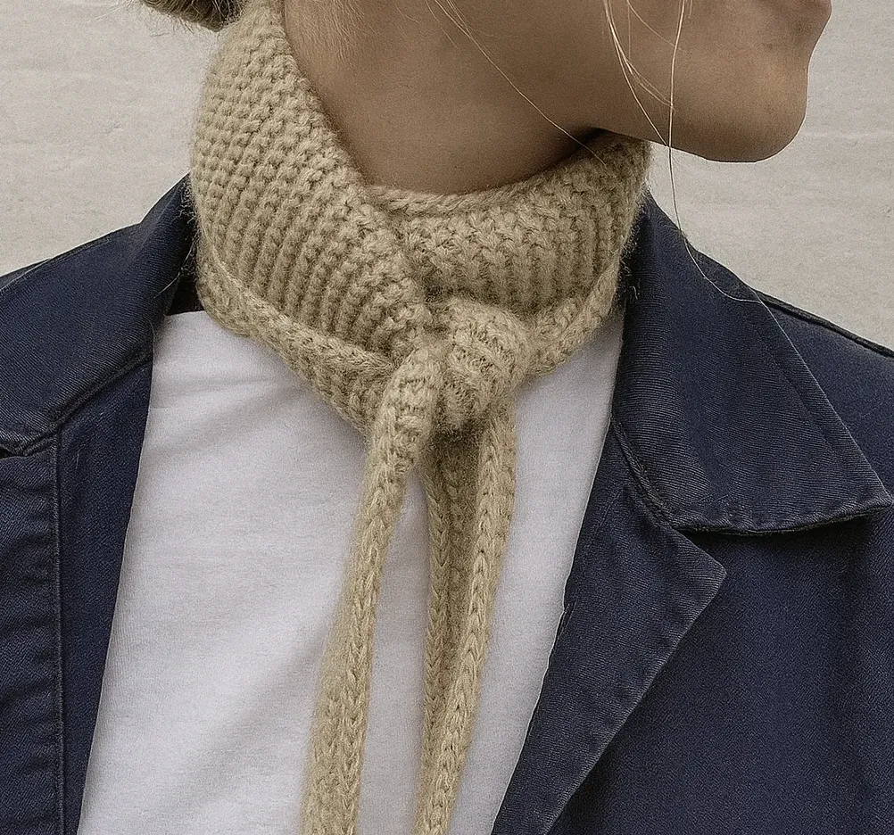
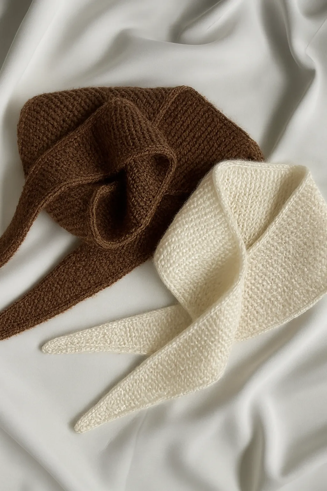
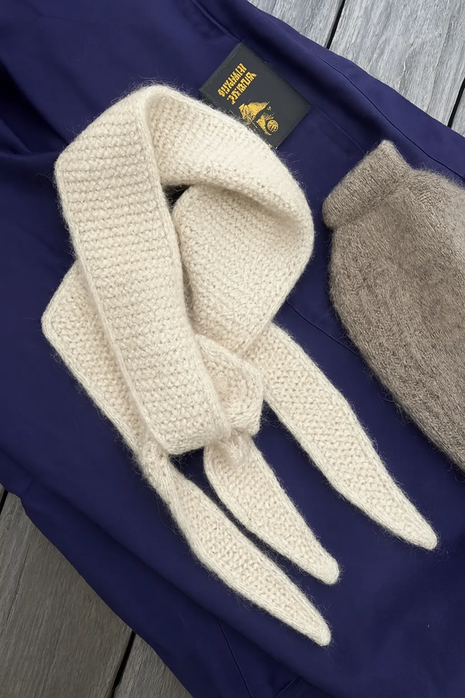
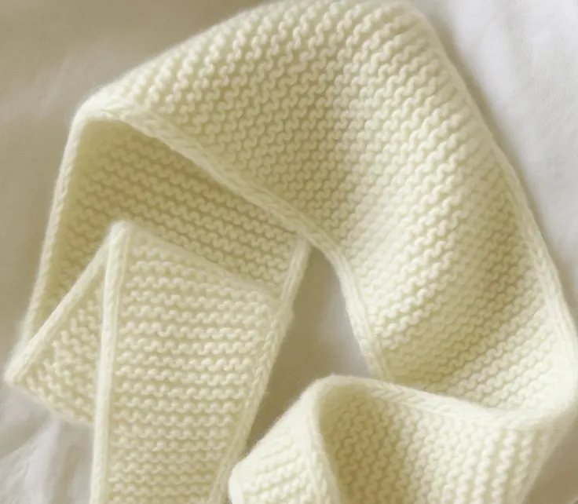
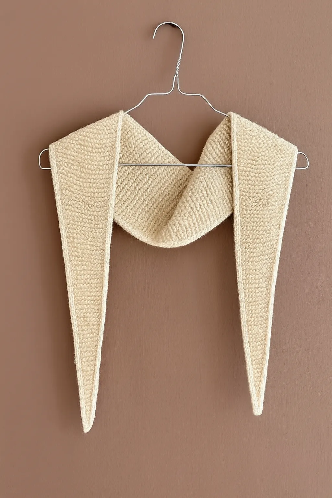
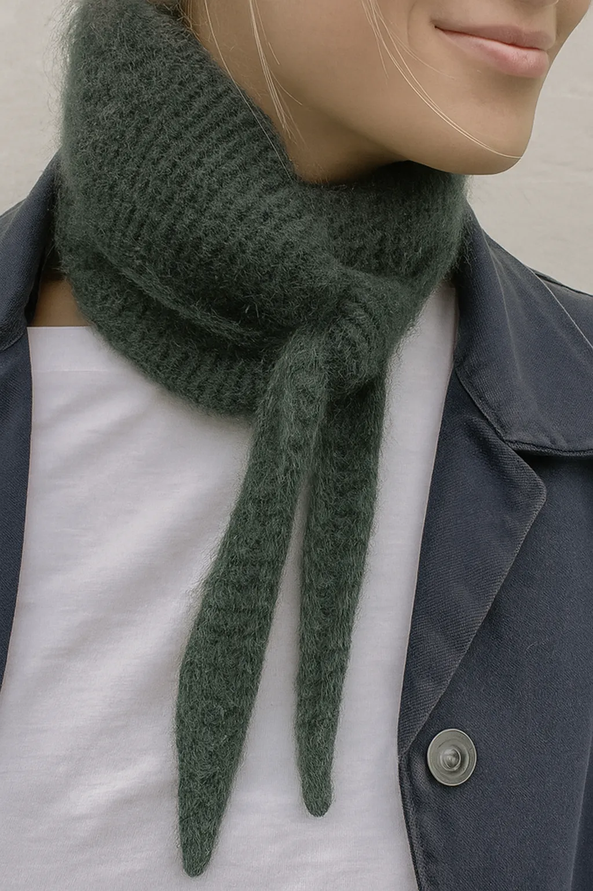

Sophie Scarf Tørklæde
Beskrivelse:
Sophie Scarf strikkes frem og tilbage i ét stykke i retstrik med i-cordkanter fra spids til spids. Den lille størrelse Sophie Scarf kan nå én gang rundt om halsen, mens den store størrelse kan nå to gange rundt om halsen. Størrelser: lille (stor) Længde fra spids til spids: ca. 80 (102) cm Bredde på midten: 11 (13) cm Strikkefasthed: 22 masker x 42 pinde i retstrik på pind 3,5 mm = 10 x 10 cm Vejledende pinde: Rundpind 3,5 mm (60 cm) Materialer: ca. 20 (28) g Cashmere fra Mondial (25 g = 115 m) eller Cashmere Classic fra Cardiff (25 g = 112 m) eller Cashmere Premium fra Lang Yarn (25 g = 115 m) eller Cashmere 6/28 fra Pascuali (25 g = 112 m) eller ca. 32 (44) g Compatible Cashmere fra Knitting for Olive (25 g = 150 m) (strikkes med dobbelttråd) eller ca. 30 (35) g Mini Alpakka fra Sandnes Garn (50 g = 150 m) Sværhedsgrad: ★ ★ (2 ud af 5) Se klassifikationen af sværhedsgrad her. Opskriften sendes som PDF-fil til din mail. Det røde Sophie Scarf er strikket i Cashmere Classic fra Cardiff i farven Hermes [517]. Det brune Sophie Scarf er strikket i Cashmere Premium fra Lang Yarn i farve 67. Det hvide Sophie Scarf er strikket i Cashmere fra Mondial i farve 938. Det røde Sophie Scarf er strikket i Fino fra Manos del Uruguay i farven Sealing Wax. Det blå Sophie Scarf er strikket i Cashmere Classic fra Cardiff i farven Hoshi [546]. Det pink Sophie Scarf er strikket i Cashmere Classic fra Cardiff i farven Marilyn [662]. Det grøngule Sophie Scarf er strikket i Cashmere Classic fra Cardiff i farven Ito [721].
Materialer
- Garn: 150–250 g blødt garn (fx akryl eller uld) i medium tykkelse (DK/light worsted)
- Pinde: 5 mm lige pinde
-
Tilbehør:
- Saks
- Stoppenål
-
Valgfrit:
- Blocking-nåle eller spiler til udspænding af tørklædet
Opskrift – trin for trin
Slå 8 + 2 + 10 masker op. 8-16 masker til eksempelvis overflade (brug klar eller den foretrukne opklæsningsfarve. Sørg for en jævn stabil kant). Bundkant (sort): Strik to pinde ret (dvs. strik alle ret på en ret- og vrangpind). Dette giver en jævn stabil kant nederst. Mønsterfarve (orange): Vi arbejder med ret- og vrangmasker i et mønster. 2-farvet glatstrik med en maske i orange, en maske i pink. Mønster gentages på alle pinde. Strik 6 pinde glat: 1. pind: 1 orange ret, 1 pink vrang (strik 2 m. sammen, træk den ene maske tilbage, strik 1 ret (AKA kant + 6 i glatstrik per farve) = 8 masker i alt 2. pind: 2 orange ret, 2 pink vrang Gentag mønster indtil der er 6 pinde Skift til pink og strik videre med alle mønsterfarver til der er 6 masker i hver farve (orange og pink) Strik 2 pinde glatstrik (ret på ret-pind, vrang på vrang-pind for en pæn kant) Gentag mønster Strik indtagninger: Strik 2 masker ret og den næste længere stykke træk den over de to masker = 1 indtagning per pind Afslutning: Luk løst af - det er en afslutning og ikke en sammensyning. Strik den sidste kant i pink. Sørg for at der er en jævn kant og at den ikke strammer. Montering: Hæft alle ender med en stoppenål. Brug lodspændt teknik: løft let og træk lidt i kanten for at sikre den er pæn! Spil evt. spil lidt med en jævn kant. Lad tørre fladt.